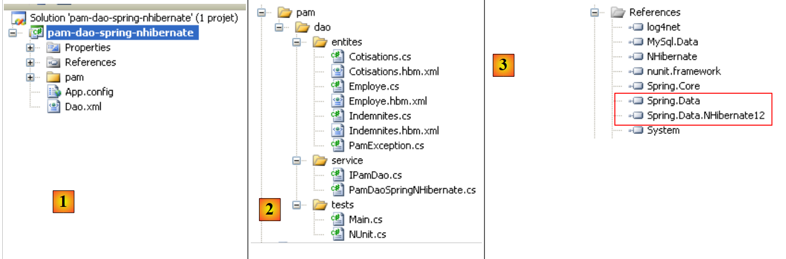
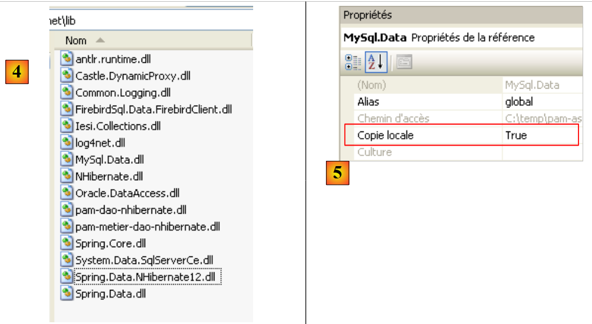
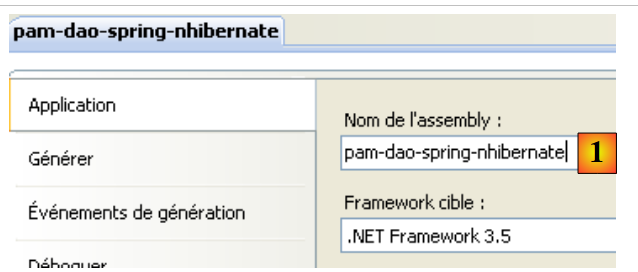

13. De applicatie [SimuPaie] – versie 9 – Spring-integratie / NHibernate
We stellen hier voor om de drielaagse applicatie ASP.NET over te nemen van versie 7 [pam-v7-3tier-nhibernate-multivues-multipages]. De gelaagde architectuur van de applicatie was als volgt:
 |
Hierboven was de laag [dao] geïmplementeerd met het framework NHibernate. Het Spring-framework was alleen gebruikt voor de integratie van de lagen onderling. Het Spring-framework biedt hulpprogramma's om met het Nhibernate-framework te werken. Door deze klassen te gebruiken, is de code van de laag [dao] eenvoudiger te schrijven. De vorige architectuur evolueert als volgt:
 |
Vanwege de gebruikte gelaagde structuur leidt het gebruik van de Spring/NHibernate-integratie tot een wijziging in uitsluitend de laag [dao]. De lagen [presentation] (web / ASP.NET) en [metier] hoeven niet te worden aangepast. Dit is het belangrijkste voordeel van de door Spring geïntegreerde gelaagde architecturen.
Vervolgens gaan we de laag [dao] samen met [Spring / NHibernate] opbouwen door de code van een werkende oplossing te toelichten. We zullen niet alle configuratie- of gebruiksmogelijkheden van het [Spring / Nhibernate]-framework behandelen. De lezer kan de voorgestelde oplossing aanpassen aan zijn eigen problemen met behulp van de documentatie van Spring.NET en [http://www.springframework.net/documentation.html] (juni 2010).
De aanpak die is gevolgd bij het bouwen van de lagen [dao] en [metier] is die van versie 3, zoals beschreven in paragraaf 7. De aanpak die is gevolgd voor de laag [présentation] is die van versie 7, zoals beschreven in paragraaf 11.
13.1. De gegevenslaag [dao]
 |
13.1.1. Het Visual Studio C#-project van de laag [dao]
Het Visual Studio-project van de laag [dao] is als volgt:
 |
- in [1], het project in zijn geheel
- de map [pam] bevat de klassen van het project en de configuratie van de entiteiten NHibernate
- de bestanden [App.config] en [Dao.xml] configureren het Spring-framework / NHibernate. We zullen de inhoud van deze twee bestanden moeten beschrijven.
- In [2] staan de verschillende klassen van het project
- in de map [entites] vinden we de entiteiten NHibernate die in het project [pam-dao-nhibernate] zijn behandeld
- in de map [service] vinden we de interface [IPamDao] en de implementatie ervan met het Spring-framework / NHibernate [PamDaoSpringNHibernate]. We zullen deze nieuwe implementatie van de interface [IPamDao] moeten schrijven
- De map [tests] bevat dezelfde tests als het project [pam-dao-nhibernate]. Deze testen dezelfde interface [IPamdao].
- In [3] staan de projectreferenties. De Spring-integratie / NHibernate vereist twee nieuwe DLL: [Spring.Data] en [Spring.Data.NHibernate12]. Deze DLL zijn beschikbaar in het framework Spring.Net. Ze zijn toegevoegd aan de map [lib] van de DLL en [4]:
 |
In de [3]-referenties van het project zijn de volgende DLL-referenties te vinden:
- NHibernate: voor de ORM NHibernate
- MySql.Data: de driver ADO.NET van de SGBD MySQL
- Spring.Core: voor het Spring-framework dat zorgt voor de integratie van de lagen
- log4net: een logboekbibliotheek
- nunit.framework: een bibliotheek voor unit-tests
- Spring.Data en Spring.Data.NHibernate12: zorgen voor de ondersteuning van Spring / NHibernate.
Deze verwijzingen zijn overgenomen uit de map [lib] [4]. Zorg ervoor dat voor al deze verwijzingen de eigenschap "Lokale kopie" op "True" staat. [5]:
13.1.2. De configuratie van het C#-project
Het project is als volgt geconfigureerd:
 |
- in [1] is de naam van de assembly van het project [pam-dao-spring-nhibernate]. Deze naam komt voor in diverse configuratiebestanden van het project.
13.1.3. De entiteiten van de laag [dao]
 |
De entiteiten (objecten) die nodig zijn voor de laag [dao] zijn verzameld in de map [entites] [1] van het project. Deze entiteiten zijn dezelfde als die van het project [pam-dao-nhibernate], met één verschil in de configuratiebestanden NHibernate. Laten we bijvoorbeeld het bestand [Employe.hbm.xml] nemen:
- in [2] is het bestand geconfigureerd om te worden opgenomen in de assembly van het project
De inhoud is als volgt:
<?xml version="1.0" encoding="utf-8" ?>
<hibernate-mapping xmlns="urn:nhibernate-mapping-2.2"
namespace="Pam.Dao.Entites" assembly="pam-dao-spring-nhibernate">
<class name="Employe" table="EMPLOYES">
<id name="Id" column="ID">
<generator class="native" />
</id>
<version name="Version" column="VERSION"/>
<property name="SS" column="SS" length="15" not-null="true" unique="true"/>
<property name="Nom" column="NOM" length="30" not-null="true"/>
<property name="Prenom" column="PRENOM" length="20" not-null="true"/>
<property name="Adresse" column="ADRESSE" length="50" not-null="true" />
<property name="Ville" column="VILLE" length="30" not-null="true"/>
<property name="CodePostal" column="CP" length="5" not-null="true"/>
<many-to-one name="Indemnites" column="INDEMNITE_ID" cascade="all" lazy="false"/>
</class>
</hibernate-mapping>
- regel 2: het attribuut assembly geeft aan dat het bestand [Employe.hbm.xml] te vinden is in de assembly [pam-dao-spring-nhibernate]
13.1.4. Spring-configuratie / NHibernate
Laten we teruggaan naar het Visual C#-project:
 |
- in [1] configureren de bestanden [App.config] en [Dao.xml] de Spring-integratie / NHibernate
13.1.4.1. Het bestand [App.config]
Het bestand [App.config] ziet er als volgt uit:
<?xml version="1.0" encoding="utf-8" ?>
<configuration>
<!-- configuratiesecties -->
<configSections>
<sectionGroup name="spring">
<section name="parsers" type="Spring.Context.Support.NamespaceParsersSectionHandler, Spring.Core" />
<section name="objects" type="Spring.Context.Support.DefaultSectionHandler, Spring.Core" />
<section name="context" type="Spring.Context.Support.ContextHandler, Spring.Core" />
</sectionGroup>
<section name="log4net" type="log4net.Config.Log4NetConfigurationSectionHandler,log4net" />
</configSections>
<!-- Spring-configuratie -->
<spring>
<parsers>
<parser type="Spring.Data.Config.DatabaseNamespaceParser, Spring.Data" />
</parsers>
<context>
<resource uri="Dao.xml" />
</context>
</spring>
<!-- Dit gedeelte bevat de log4net-configuratie-instellingen -->
<!-- NOTE IMPORTANTE: de logbestanden zijn standaard niet actief. Ze moeten per programma worden geactiveerd
avec l'instruction log4net.Config.XmlConfigurator.Configure();
! -->
<log4net>
<appender name="ConsoleAppender" type="log4net.Appender.ConsoleAppender">
<layout type="log4net.Layout.PatternLayout">
<conversionPattern value="%-5level %logger - %message%newline" />
</layout>
</appender>
<!-- Stel het standaard logniveau in op DEBUG -->
<root>
<level value="DEBUG" />
<appender-ref ref="ConsoleAppender" />
</root>
<!-- Logging voor Spring instellen. Loggernamen in Spring komen overeen met de naamruimte -->
<logger name="Spring">
<level value="INFO" />
</logger>
<logger name="Spring.Data">
<level value="DEBUG" />
</logger>
<logger name="NHibernate">
<level value="DEBUG" />
</logger>
</log4net>
</configuration>
Het bovenstaande bestand [App.config] configureert Spring (regels 5-9, 15-22), log4net (regel 10, regels 28-53), maar niet NHibernate. De Spring-objecten worden niet geconfigureerd in [App.config], maar in het bestand [Dao.xml] (regel 20). De configuratie van Spring / NHibernate, die bestaat uit het declareren van specifieke Spring-objecten, is dus in dit bestand te vinden.
13.1.4.2. Het bestand [Dao.xml]
Het bestand [Dao.xml], waarin de door Spring beheerde objecten zijn verzameld, ziet er als volgt uit:
<?xml version="1.0" encoding="utf-8" ?>
<objects xmlns="http://www.springframework.net"
xmlns:db="http://www.springframework.net/database">
<!-- Verwezen naar door het configuratiebestand van de hoofdtoepassingscontext -->
<description>
Application Spring / NHibernate
</description>
<!-- Database en NHibernate-configuratie -->
<db:provider id="DbProvider"
provider="MySql.Data.MySqlClient"
connectionString="Server=localhost;Database=dbpam_nhibernate;Uid=root;Pwd=;"/>
<object id="NHibernateSessionFactory" type="Spring.Data.NHibernate.LocalSessionFactoryObject, Spring.Data.NHibernate12">
<property name="DbProvider" ref="DbProvider"/>
<property name="MappingAssemblies">
<list>
<value>pam-dao-spring-nhibernate</value>
</list>
</property>
<property name="HibernateProperties">
<dictionary>
<entry key="hibernate.dialect" value="NHibernate.Dialect.MySQLDialect"/>
<entry key="hibernate.show_sql" value="false"/>
</dictionary>
</property>
<property name="ExposeTransactionAwareSessionFactory" value="true" />
</object>
<!-- transactiebeheerder -->
<object id="transactionManager"
type="Spring.Data.NHibernate.HibernateTransactionManager, Spring.Data.NHibernate12">
<property name="DbProvider" ref="DbProvider"/>
<property name="SessionFactory" ref="NHibernateSessionFactory"/>
</object>
<!-- Hibernate-sjabloon -->
<object id="HibernateTemplate" type="Spring.Data.NHibernate.Generic.HibernateTemplate">
<property name="SessionFactory" ref="NHibernateSessionFactory" />
<property name="TemplateFlushMode" value="Auto" />
<property name="CacheQueries" value="true" />
</object>
<!-- Data Access Objects -->
<object id="pamdao" type="Pam.Dao.Service.PamDaoSpringNHibernate, pam-dao-spring-nhibernate" init-method="init" destroy-method="destroy">
<property name="HibernateTemplate" ref="HibernateTemplate"/>
</object>
</objects>
- De regels 11-13 configureren de verbinding met de database [dbpam_nhibernate]. Hierin staat:
- de provider ADO.NET die nodig is voor de verbinding, in dit geval de provider van SGBD MySQL. Dit houdt in dat de DLL en [Mysql.Data] in de projectreferenties moeten staan.
- de verbindingsstring voor de database (server, databasenaam, eigenaar van de verbinding, wachtwoord)
- de regels 15-29 configureren de SessionFactory van NHibernate, het object dat wordt gebruikt om NHibernate-sessies te verkrijgen. Ter herinnering: elke bewerking op de database vindt plaats binnen een NHibernate-sessie. Op regel 15 is te zien dat SessionFactory wordt geïmplementeerd door de Spring-klasse Spring.Data.NHibernate.LocalSessionFactoryObject, die te vinden is in DLL Spring.Data.NHibernate12.
- regel 16: de eigenschap DbProvider stelt de parameters voor de databaseverbinding in (provider ADO.NET en verbindingsstring). Hier verwijst deze eigenschap naar het object DbProvider dat eerder in de regels 11-13 is gedefinieerd.
- regels 17-20: hiermee wordt de lijst vastgelegd van assemblies die [*.hbm.xml]-bestanden bevatten die entiteiten configureren die door NHibernate worden beheerd. Regel 19 geeft aan dat deze bestanden in de assembly van het project te vinden zijn. We herinneren eraan dat deze naam te vinden is in de eigenschappen van het C#-project. We herinneren er ook aan dat alle [*.hbm.xml]-bestanden zijn geconfigureerd om te worden opgenomen in de assembly van het project.
- regels 22-27: specifieke eigenschappen van NHibernate.
- regel 24: het gebruikte dialect SQL is dat van MySQL
- regel 25: de door NHibernate gegenereerde SQL verschijnt niet in de logbestanden van de console. Door deze eigenschap in te stellen op true kun je de opdrachten SQL zien die door NHibernate zijn verzonden. Dit kan bijvoorbeeld helpen om te begrijpen waarom een applicatie traag is bij het benaderen van de database.
- regel 28: de eigenschap ExposeTransactionAwareSessionFactory op true zorgt ervoor dat Spring de transactiebeheerannotaties in de C#-code gaat beheren. We komen hierop terug wanneer we de klasse schrijven die de laag [dao] implementeert.
- De regels 32-36 definiëren de transactiebeheerder. Ook hier is deze beheerder een Spring-klasse van de DLL Spring.Data.NHibernate12. Deze handler moet de verbindingsparameters voor de database kennen (regel 34) en de SessionFactory van NHibernate (regel 35).
- De regels 39-43 definiëren de eigenschappen van de klasse HibernateTemplate, ook weer een Spring-klasse. Deze klasse zal worden gebruikt als hulpprogramma in de klasse die de laag [dao] implementeert. Ze vergemakkelijkt de interacties met de objecten NHibernate. Deze klasse heeft bepaalde eigenschappen die moeten worden geïnitialiseerd:
- regel 40: SessionFactory van NHibernate
- regel 41: de eigenschap TemplateFlushMode bepaalt de synchronisatiemodus van de persistentiecontext NHibernate met de database. De modus Auto zorgt ervoor dat er synchronisatie plaatsvindt:
- aan het einde van een transactie
- vóór een SELECT-bewerking
- regel 42: de query's HQL (Hibernate Query Language) worden in de cache opgeslagen. Dit kan een prestatiewinst opleveren.
- regels 46-48 definiëren de implementatieklasse van de laag [dao]
- regel 46: de laag [dao] wordt geïmplementeerd door de klasse [PamdaoSpringNHibernate] van de DLL [pam-dao-spring-nhibernate]. Na het instantiëren van de klasse wordt de methode init van de klasse onmiddellijk uitgevoerd. Bij het afsluiten van de Spring-container wordt de methode destroy van de klasse uitgevoerd.
- regel 47: de klasse [PamDaoSpringNHibernate] krijgt een eigenschap HibernateTemplate die wordt geïnitialiseerd met de eigenschap HibernateTemplate uit regel 39.
13.1.5. Implementatie van de laag [dao]
13.1.5.1. Het skelet van de implementatieklasse
De interface [IPamDao] is dezelfde als in het project [pam-dao-nhibernate]:
using Pam.Dao.Entites;
namespace Pam.Dao.Service {
public interface IPamDao {
// Lijst met alle identiteiten van de werknemers
Employe[] GetAllIdentitesEmployes();
// een specifieke werknemer met zijn vergoedingen
Employe GetEmploye(string ss);
// lijst van alle premies
Cotisations GetCotisations();
}
}
- regel 1: de naamruimte van de entiteiten van de laag [dao] wordt geïmporteerd.
- regel 3: de laag [dao] bevindt zich in de naamruimte [Pam.Dao.Service]. Van de elementen in de naamruimte [Pam.Dao.Entites] kunnen meerdere exemplaren worden aangemaakt. Van de elementen in de naamruimte [Pam.Dao.Service] wordt slechts één exemplaar (singleton) aangemaakt. Dit was de reden voor de keuze van de namen van de naamruimten.
- regel 4: de interface heet [IPamDao]. Deze definieert drie methoden:
- regel 6: [GetAllIdentitesEmployes] retourneert een array van objecten van het type [Employe], die de lijst met kinderopvangmedewerkers in vereenvoudigde vorm weergeeft (achternaam, voornaam, SS).
- regel 8, [GetEmploye] retourneert een object van het type [Employe]: de werknemer met het socialezekerheidsnummer dat als parameter aan de methode is doorgegeven, samen met de vergoedingen die aan zijn index zijn gekoppeld.
- regel 10, [GetCotisations] retourneert het object [Cotisations] dat de tarieven van de verschillende sociale premies bevat die op het brutoloon moeten worden ingehouden.
Het raamwerk van de implementatieklasse van deze interface met Spring-ondersteuning / NHibernate zou als volgt kunnen zijn:
using System;
using System.Collections;
using System.Collections.Generic;
using Pam.Dao.Entites;
using Spring.Data.NHibernate.Generic.Support;
using Spring.Transaction.Interceptor;
namespace Pam.Dao.Service {
public class PamDaoSpringNHibernate : HibernateDaoSupport, IPamDao {
// privévelden
private Cotisations cotisations;
private Employe[] employes;
// init
[Transaction(ReadOnly = true)]
public void init() {
...
}
// object verwijderen
public void destroy() {
if (HibernateTemplate.SessionFactory != null) {
HibernateTemplate.SessionFactory.Close();
}
}
// lijst van alle identiteiten van werknemers
public Employe[] GetAllIdentitesEmployes() {
return employes;
}
// een specifieke werknemer met zijn vergoedingen
[Transaction(ReadOnly = true)]
public Employe GetEmploye(string ss) {
....
}
// lijst met premies
public Cotisations GetCotisations() {
return cotisations;
}
}
}
- regel 9: de klasse [PamDaoSpringNHibernate] implementeert inderdaad de interface van de laag [dao] [IPamDao]. Ze is ook afgeleid van de Spring-klasse [HibernateDaoSupport]. Deze klasse heeft een eigenschap [HibernateTemplate] die wordt geïnitialiseerd door de Spring-configuratie die is uitgevoerd (regel 2 hieronder):
<object id="pamdao" type="Pam.Dao.Service.PamDaoSpringNHibernate, pam-dao-spring-nhibernate" init-method="init" destroy-method="destroy">
<property name="HibernateTemplate" ref="HibernateTemplate"/>
</object>
- In regel 1 hierboven zien we dat de definitie van het object [pamdao] aangeeft dat de methoden init en destroy van de klasse [PamDaoSpringNHibernate] op specifieke momenten moeten worden uitgevoerd. Deze twee methoden zijn inderdaad aanwezig in de klasse op regel 16 en 21.
- regels 15, 34: annotaties die ervoor zorgen dat de geannoteerde methode binnen een transactie wordt uitgevoerd. Het attribuut ReadOnly=true geeft aan dat de transactie alleen-lezen is. De methode die binnen de transactie wordt uitgevoerd, kan een uitzondering genereren. In dat geval zorgt Spring automatisch voor een Rollback van de transactie. Deze annotatie maakt het overbodig om binnen de methode zelf een transactie te beheren.
- regel 16: de methode init wordt door Spring onmiddellijk na het instantiëren van de klasse uitgevoerd. We zullen zien dat deze methode bedoeld is om de privévelden van de regels 11 en 12 te initialiseren. De methode wordt binnen een transactie uitgevoerd (regel 15).
- De methoden van de interface [IPamDao] worden geïmplementeerd op de regels 28, 35 en 40.
- regels 28-30: de methode [GetAllIdentitesEmployes] beperkt zich tot het teruggeven van het attribuut van regel 12, dat is geïnitialiseerd door de methode init.
- regels 40-42: de methode [GetCotisations] geeft alleen het attribuut van regel 11 weer, dat is geïnitialiseerd door de methode init.
13.1.5.2. De nuttige methoden van de klasse HibernateTemplate
We zullen de volgende methoden van de klasse HibernateTemplate gebruiken:
IList<T> Find<T>(string requete_hql) | voert de query HQL uit en retourneert een lijst met objecten van het type T |
IList<T> Find<T>(string requete_hql, object[]) | voert een query HQL uit, ingesteld met ?. De waarden van deze parameters worden geleverd door de objectenarray. |
IList<T> LoadAll<T>() | geeft alle entiteiten van het type T terug |
Er zijn nog andere handige methoden die we hier niet zullen gebruiken, waarmee entiteiten kunnen worden opgehaald, opgeslagen, bijgewerkt en verwijderd:
T Load<T>(object id) | voegt de entiteit van het type T met de primaire sleutel id toe aan de sessie NHibernate. |
void SaveOrUpdate(object entiteit) | voegt (INSERT) of werkt bij (UPDATE) het object entité bij, afhankelijk van of dit een primaire sleutel (UPDATE) heeft of niet (INSERT). Het ontbreken van een primaire sleutel kan worden geconfigureerd via het attribuut unsaved-values in het configuratiebestand van de entiteit. Na de bewerking SaveOrUpdate bevindt het object entité zich in de sessie NHibernate. |
void Delete(object entiteit) | verwijdert het object entité uit de sessie NHibernate. |
13.1.5.3. Implementatie van de methode init
De methode init van de klasse [PamDaoSpringNHibernate] is standaard de methode die wordt uitgevoerd nadat Spring een instantie van de klasse heeft aangemaakt. Het doel ervan is om de vereenvoudigde identiteiten van de werknemers (achternaam, voornaam, SS) en de premietarieven in de lokale cache op te slaan. De code zou er als volgt uit kunnen zien.
[Transaction(ReadOnly = true)]
public void init() {
try {
// de vereenvoudigde lijst met werknemers ophalen
IList<object[]> lignes = HibernateTemplate.Find<object[]>("select e.SS,e.Nom,e.Prenom from Employe e");
// deze wordt in een tabel geplaatst
employes = new Employe[lignes.Count];
int i = 0;
foreach (object[] ligne in lignes) {
employes[i] = new Employe() { SS = ligne[0].ToString(), Nom = ligne[1].ToString(), Prenom = ligne[2].ToString() };
i++;
}
// de premietarieven worden in een object geplaatst
cotisations = (HibernateTemplate.LoadAll<Cotisations>())[0];
} catch (Exception ex) {
// de uitzondering wordt omgezet
throw new PamException(string.Format("Erreur d'accès à la BD : [{0}]", ex.ToString()), 43);
}
}
- regel 5: er wordt een query HQL uitgevoerd. Deze query vraagt de velden SS, Achternaam en Voornaam op van alle entiteiten van het type Employé. De query retourneert een lijst met objecten. Als we de volledige werknemer hadden opgevraagd in de vorm „select e from Employe e”, zouden we een lijst met objecten van het type Employe hebben ontvangen.
- regels 7-12: deze lijst met objecten wordt gekopieerd naar een array van objecten van het type Employe.
- regel 14: we vragen de lijst op van alle entiteiten van het type Cotisations. We weten dat deze lijst slechts één element bevat. We halen dus het eerste element uit de lijst op om de premietarieven te verkrijgen.
- De regels 7 en 14 initialiseren de twee privévelden van de klasse.
13.1.5.4. Implementatie van de methode GetEmploye
De methode GetEmploye moet de entiteit ‘Werknemer’ met een bepaald nummer SS retourneren. De code zou er als volgt uit kunnen zien:
[Transaction(ReadOnly = true)]
public Employe GetEmploye(string ss) {
IList<Employe> employés = null;
try {
// query
employés = HibernateTemplate.Find<Employe>("select e from Employe e where e.SS=?", new object[]{ss});
} catch (Exception ex) {
// de uitzondering wordt omgezet
throw new PamException(string.Format("Erreur d'accès à la BD lors de la demande de l'employé de n° ss [{0}] : [{1}]", ss, ex.ToString()), 41);
}
// is er een medewerker teruggevonden?
if (employés.Count == 0) {
// dit wordt gemeld
throw new PamException(string.Format("L'employé de n° ss [{0}] n'existe pas", ss), 42);
} else {
return employés[0];
}
}
- regel 6: haalt de lijst op van werknemers met een bepaald nummer SS
- regel 12: normaal gesproken moet er, als de werknemer bestaat, een lijst met één element worden opgehaald
- regel 14: als dat niet het geval is, wordt er een uitzondering gegenereerd
- regel 16: als dat wel het geval is, wordt de eerste medewerker uit de lijst geretourneerd
13.1.5.5. Conclusion
Als we de code van de laag [dao] vergelijken in het geval van gebruik
- alleen het framework NHibernate
- het Spring-framework / NHibernate
blijkt dat de tweede oplossing het mogelijk heeft gemaakt om eenvoudigere code te schrijven.
13.2. Tests van de laag [dao]
13.2.1. Het Visual Studio-project
Het Visual Studio-project is al eerder gepresenteerd. Laten we het nog eens op een rijtje zetten:
 |
- in [1], het project in zijn geheel
- in [2], de verschillende klassen van het project. De map [tests] bevat een consoletest [Main.cs] en een unit-test [NUnit.cs].
- in [3] wordt het programma [Main.cs] gecompileerd.
 |
- in [4] wordt het bestand [NUnit.cs] niet gegenereerd.
- Het project is een console-applicatie. De uitgevoerde klasse is de klasse die is opgegeven in [5], de klasse van het bestand [Main.cs].
13.2.2. Het consoletestprogramma [Main.cs]
Het testprogramma [Main.cs] wordt uitgevoerd in de volgende architectuur:
 |
Het is bedoeld om de methoden van de interface [IPamDao] te testen. Een eenvoudig voorbeeld zou het volgende kunnen zijn:
using System;
using Pam.Dao.Entites;
using Pam.Dao.Service;
using Spring.Context.Support;
namespace Pam.Dao.Tests {
public class MainPamDaoTests {
public static void Main() {
try {
// instantie van laag [dao]
IPamDao pamDao = (IPamDao)ContextRegistry.GetContext().GetObject("pamdao");
// lijst met identiteiten van medewerkers
foreach (Employe Employe in pamDao.GetAllIdentitesEmployes()) {
Console.WriteLine(Employe.ToString());
}
// een medewerker met zijn vergoedingen
Console.WriteLine("------------------------------------");
Console.WriteLine(pamDao.GetEmploye("254104940426058"));
Console.WriteLine("------------------------------------");
// overzicht van de premies
Cotisations cotisations = pamDao.GetCotisations();
Console.WriteLine(cotisations.ToString());
} catch (Exception ex) {
// weergave van uitzondering
Console.WriteLine(ex.ToString());
}
//pauze
Console.ReadLine();
}
}
}
- regel 11: er wordt aan Spring gevraagd om een referentie op de laag [dao].
- regels 13-15: test van de methode [GetAllIdentitesEmployes] van de interface [IPamDao]
- regel 18: test van de methode [GetEmploye] van de interface [IPamDao]
- regel 21: test van de methode [GetCotisations] van de interface [IPamDao]
Spring, NHibernate en log4net worden geconfigureerd door het bestand [App.config] , dat in paragraaf 13.1.4.1 is besproken.
De uitvoering met de in paragraaf 6.2 beschreven database levert de volgende console-uitvoer op:
- regels 1-2: de 2 werknemers van het type [Employe] met uitsluitend de gegevens van [SS, Nom, Prenom]
- regel 4: de werknemer van het type [Employe] met het socialezekerheidsnummer [254104940426058]
- regel 5: de premiepercentages
13.2.3. Unit-tests met NUnit
We gaan nu verder met een unit-test voor NUnit. Het Visual Studio-project van de laag [dao] zal als volgt worden aangepast:
 |
- naar [1], het testprogramma [NUnit.cs]
- in [2,3], het project zal een DLL genereren met de naam [pam-dao-spring-nhibernate.dll]
- in [4], de verwijzing naar DLL van het framework NUnit: [nunit.framework.dll]
- in [5], de klasse [Main.cs] wordt niet opgenomen in de DLL [pam-dao-spring-nhibernate]
- in [6] wordt de klasse [NUnit.cs] opgenomen in de DLL [pam-dao-spring-nhibernate]
De testklasse NUnit is als volgt:
using System.Collections;
using NUnit.Framework;
using Pam.Dao.Service;
using Pam.Dao.Entites;
using Spring.Objects.Factory.Xml;
using Spring.Core.IO;
using Spring.Context.Support;
namespace Pam.Dao.Tests {
[TestFixture]
public class NunitPamDao : AssertionHelper {
// de te testen laag [dao]
private IPamDao pamDao = null;
// constructor
public NunitPamDao() {
// instantie van laag [dao]
pamDao = (IPamDao)ContextRegistry.GetContext().GetObject("pamdao");
}
// initialisatie
[SetUp]
public void Init() {
}
[Test]
public void GetAllIdentitesEmployes() {
// controle aantal werknemers
Expect(2, EqualTo(pamDao.GetAllIdentitesEmployes().Length));
}
[Test]
public void GetCotisations() {
// controle premiepercentages
Cotisations cotisations = pamDao.GetCotisations();
Expect(3.49, EqualTo(cotisations.CsgRds).Within(1E-06));
Expect(6.15, EqualTo(cotisations.Csgd).Within(1E-06));
Expect(9.39, EqualTo(cotisations.Secu).Within(1E-06));
Expect(7.88, EqualTo(cotisations.Retraite).Within(1E-06));
}
[Test]
public void GetEmployeIdemnites() {
// controle personen
Employe employe1 = pamDao.GetEmploye("254104940426058");
Employe employe2 = pamDao.GetEmploye("260124402111742");
Expect("Jouveinal", EqualTo(employe1.Nom));
Expect(2.1, EqualTo(employe1.Indemnites.BaseHeure).Within(1E-06));
Expect("Laverti", EqualTo(employe2.Nom));
Expect(1.93, EqualTo(employe2.Indemnites.BaseHeure).Within(1E-06));
}
[Test]
public void GetEmployeIdemnites2() {
// controle op niet-bestaande persoon
bool erreur = false;
try {
Employe employe1 = pamDao.GetEmploye("xx");
} catch {
erreur = true;
}
Expect(erreur, True);
}
}
}
Deze klasse is al behandeld in paragraaf 7.3.4.
Bij het genereren van het project worden de bestanden DLL en [pam-dao-spring-nhibernate.dll] aangemaakt in de map [bin/Release].
 |
We laden de bestanden DLL en [pam-dao-spring-nhibernate.dll] met de tool [NUnit-Gui], versie 2.4.6, en voeren de tests uit:

Hierboven zijn de tests geslaagd.
Praktische opdracht:
voer de tests van de klasse [PamDaoSpringNHibernate] uit op de machine.- Gebruik verschillende configuratiebestanden van [Dao.xml] om andere SGBD (Firebird, MySQL, Postgres, SQL Server) te gebruiken
13.2.4. Genereren v e van de DLL van de laag [dao]
Zodra de klasse [PamDaoNHibernate] is geschreven en getest, wordt de DLL van de laag [dao] op de volgende manier gegenereerd:
 |
- [1], de testprogramma's worden uitgesloten van de projectassemblage
- [2,3], configuratie van het project
- [4], het project wordt gegenereerd
- DLL wordt gegenereerd in de map [bin/Release] [5]. We voegen dit toe aan de DLL-bestanden die al aanwezig zijn in de map [lib] [6]:
 |
13.3. De bedrijfslaag
Laten we nog eens terugkomen op de algemene architectuur van de applicatie [SimuPaie]:
 |
We gaan er nu vanuit dat de laag [dao] is geïmplementeerd en dat deze is ingekapseld in de DLL [pam-dao-spring-nhibernate.dll]. We richten ons nu op de laag [metier]. Deze laag implementeert de bedrijfsregels, in dit geval de regels voor de berekening van een salaris.
Het Visual Studio-project van de bedrijfslaag zou er als volgt uit kunnen zien:
 |
- in [1] het volledige project dat is geconfigureerd door de bestanden [App.config] en [Dao.xml]. Het bestand [App.config] is identiek aan wat het was in het project van de [dao]-laag en [pam-dao-spring-nhibernate]. Hetzelfde geldt voor het bestand [Dao.xml], behalve dat het een extra Spring-object met id pammetier declareert. De declaratie van dit laatste is identiek aan die in het bestand [App.config] van het project [pam-metier-dao-nhibernate].
- In [2] is de map [pam] identiek aan wat deze was in de laag [metier] van het project [pam-metier-dao-nhibernate]
- in [3] de door het project gebruikte referenties. Let op de DLL en [pam-dao-spring-nhibernate] uit de eerder besproken laag [dao].
Vraag: bouw het bovenstaande project [pam-metier-dao-spring-nhibernate]. Het zal afzonderlijk worden getest:
-
in de consolemodus door het consoleprogramma [Main.cs]
-
door de unit-test [NUnit.cs], uitgevoerd door het framework NUnit
Het nieuwe project [pam-metier-dao-spring-nhibernate] kan worden gebouwd door het project [pam-metier-dao-nhibernate] eenvoudigweg te kopiëren en vervolgens de elementen aan te passen die moeten worden gewijzigd.
Na de tests wordt de DLL gegenereerd vanuit de laag [metier], die we [pam-metier-dao-spring-nhibernate] zullen noemen:
 |
- in [1], de geslaagde test NUnit
- in [2], de door het project gegenereerde DLL
We voegen de DLL van de laag [metier] toe aan de DLL die al aanwezig zijn in de map [lib] [3]:
 |
13.4. De laag [web]
Laten we nog eens terugkomen op de algemene architectuur van de applicatie [SimuPaie]:
 |
We gaan ervan uit dat de lagen [dao] en [métier] al zijn gerealiseerd en ingekapseld in de lagen DLL en [pam-dao-spring-nhibernate, pam-metier-dao-spring-nhibernate]. We beschrijven nu de weblaag.
Het Visual Web Developer-project van de laag [web] wordt allereerst verkregen door de map van het webproject [pam-v7-3tier-nhibernate-multivues-multipages] eenvoudigweg te kopiëren. Het project wordt vervolgens hernoemd naar [pam-v9-3tier-spring-nhibernate-multivues-multipages]:
 |
Het nieuwe webproject [pam-v9-3tier-spring-nhibernate-multivues-multipages] verschilt op de volgende punten van het project [pam-v7-3tier-nhibernate-multivues-multipages]:
- in [1] wordt het geconfigureerd door de bestanden [Dao.xml] en [Web.config]. [Dao.xml] bestond niet in [pam-v7] en het bestand [Web.config] moet de Spring-configuratie / NHibernate bevatten, terwijl in [pam-v7] alleen NHibernate werd geconfigureerd.
- In [2] zijn de DLL-bestanden van de lagen [dao] en [metier] de bestanden die we zojuist hebben opgebouwd.
Het bestand [Dao.xml] is het bestand dat is gebruikt bij het samenstellen van de laag [metier]. Het bestand [Web.config] is het bestand van [pam-v7] waaraan de Spring-configuratie / NHibernate is toegevoegd, die te vinden was in de bestanden [App.config] van de lagen [dao] en [metier]. Het bestand [Web.config] van [pam-v9] ziet er als volgt uit:
<configuration>
<configSections>
<sectionGroup name="system.web.extensions" type="System.Web.Configuration.SystemWebExtensionsSectionGroup, System.Web.Extensions, Version=3.5.0.0, Culture=neutral, PublicKeyToken=31BF3856AD364E35">
........
</sectionGroup>
<sectionGroup name="spring">
<section name="parsers" type="Spring.Context.Support.NamespaceParsersSectionHandler, Spring.Core" />
<section name="objects" type="Spring.Context.Support.DefaultSectionHandler, Spring.Core" />
<section name="context" type="Spring.Context.Support.ContextHandler, Spring.Core" />
</sectionGroup>
<section name="log4net" type="log4net.Config.Log4NetConfigurationSectionHandler,log4net" />
</configSections>
<!-- Spring-configuratie -->
<spring>
<parsers>
<parser type="Spring.Data.Config.DatabaseNamespaceParser, Spring.Data" />
</parsers>
<context>
<resource uri="~/Dao.xml" />
</context>
</spring>
............. le reste est identique au fichier [Web.config] de [pam-v7]
In de regels 7-11 en 16-23 vinden we de Spring-configuratie terug die we hadden in de bestanden [App.config] van de lagen [dao] en [metier] die eerder waren opgebouwd, met één verschil: in de bestanden [App.config] was regel 17 als volgt geschreven:
<resource uri="Dao.xml" />
Met de volgende configuratie:
 |
wordt het bestand [Dao.xml] gekopieerd naar de map [bin] in de map van het webproject. Met de syntaxis
<resource uri="Dao.xml" />
wordt het bestand [Dao.xml] gezocht in de huidige map van het proces dat de webapplicatie uitvoert. Deze map is echter niet de map [bin] van het uitgevoerde webproject. Je moet het volgende schrijven:
<resource uri="~/Dao.xml" />
zodat het bestand [Dao.xml] wordt gezocht in de map [bin] van de map van het uitgevoerde webproject.
Vraag: deze webapplicatie op een computer implementeren.
13.5. Conclusion
We zijn overgestapt van de architectuur:
 |
naar de architectuur:
 |
Het ging erom de laag [dao] te implementeren door gebruik te maken van de mogelijkheden die de integratie van NHibernate door Spring biedt.
We hebben kunnen vaststellen dat dit:
- invloed had op de laag [dao]. Deze was eenvoudiger te schrijven, maar vereiste een complexere Spring-configuratie.
- een marginale invloed had op de lagen [metier] en [web]
Dit was weer een voorbeeld van het nut van gelaagde architecturen.